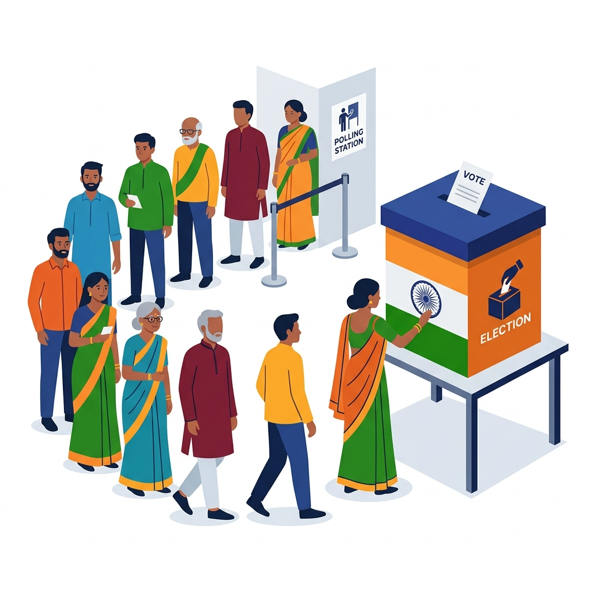
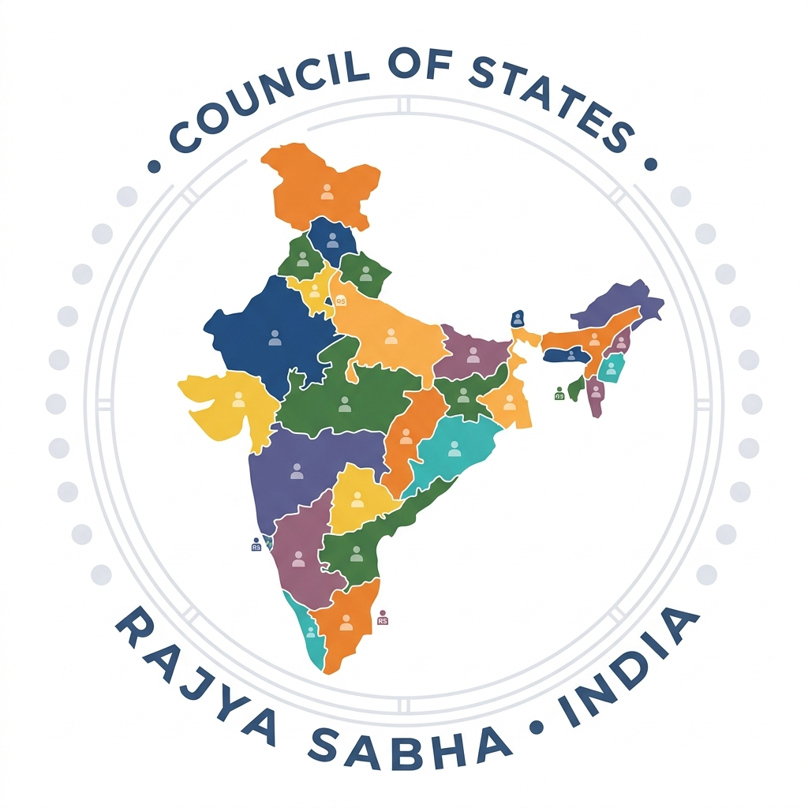

Vardaan Learning Institute
ICSE Class 10 Civics • Chapter Notes
🌐 vardaanlearning.com📞 9508841336Team Vardaan ❤️
Chapter 1: The Union Parliament
India has a federal setup with a strong central government. The law-making body at the central level is known as the Union Parliament. It is bicameral, meaning it consists of two houses: the Lok Sabha and the Rajya Sabha, along with the President of India.
1. The Federal Setup in India
- Division of Powers: The Constitution divides administrative and legislative powers between the Centre (Union) and the States.
- Written Constitution: India has a supreme, written constitution which cannot be easily amended.
- Independent Judiciary: The Supreme Court acts as the guardian of the Constitution and resolves disputes between the Centre and States.
2. Lok Sabha (The House of the People)

The Lok Sabha is the lower house of the Parliament. It represents the people of India.
Composition and Term
Composition
- Maximum Strength: 552 members (530 from States, 20 from Union Territories, and 2 nominated by the President from the Anglo-Indian community if under-represented. Note: The nomination of Anglo-Indians has been discontinued recently, making the effective max strength 550).
- Current Strength: 543 elected members.
- Term: 5 years. It can be dissolved earlier by the President on the advice of the Prime Minister. During a National Emergency, its term can be extended by one year at a time.
Qualifications for Membership
- Must be a citizen of India.
- Must be at least 25 years of age.
- Must possess such other qualifications as may be prescribed by Parliament (e.g., must be a registered voter).
- Must not hold any office of profit under the government.
- Must not be of unsound mind or an undischarged insolvent.
The Speaker of the Lok Sabha
The Speaker is the presiding officer of the Lok Sabha, elected by its members from among themselves. The Speaker's role is crucial in maintaining order and dignity in the House.
Functions of the Speaker:
- Regulatory Functions: Presides over meetings, maintains order, and decides whether a bill is a Money Bill (the Speaker's decision is final).
- Disciplinary Functions: Can suspend a member for misconduct or adjourn the House if there is a lack of quorum (minimum 1/10th of total members required to hold a meeting).
- Administrative Functions: Receives all petitions and documents addressed to the House; communicates decisions of the House to the concerned authorities.
- Casting Vote: Does not vote in the first instance, but exercises a casting vote in case of a tie.
3. Rajya Sabha (The Council of States)

The Rajya Sabha is the upper house of the Parliament. It represents the States and Union Territories of India.
Composition and Term
Composition
- Maximum Strength: 250 members (238 elected from States/UTs and 12 nominated by the President).
- Nominated Members: The 12 nominated members are persons with special knowledge or practical experience in Art, Literature, Science, or Social Service.
- Term: It is a permanent house and cannot be dissolved. Every member has a term of 6 years, with one-third of its members retiring every two years.
Qualifications for Membership
- Must be a citizen of India.
- Must be at least 30 years of age.
- Other qualifications are the same as those for the Lok Sabha.
Presiding Officer
The Vice-President of India is the ex-officio Chairman of the Rajya Sabha. The Rajya Sabha also elects a Deputy Chairman from among its members.
4. Powers and Functions of the Union Parliament
Legislative Powers
- Can make laws on all subjects listed in the Union List (e.g., Defence, Foreign Affairs) and Concurrent List (e.g., Education, Marriage).
- Residuary Powers: Parliament has the power to make laws on subjects not mentioned in any of the three lists.
- During a National Emergency, Parliament can make laws on subjects in the State List.
- When the Rajya Sabha passes a resolution by a 2/3rd majority declaring that a State List subject has assumed national importance, Parliament can legislate on it.
Financial Powers
- The Budget: Parliament passes the Union Budget (estimated receipts and expenditure) every year.
- Money Bills: A Money Bill can only be introduced in the Lok Sabha. The Rajya Sabha can only delay it by 14 days or make recommendations, which the Lok Sabha is not bound to accept.
- No tax can be levied and no expenditure can be incurred by the government without parliamentary approval.
Executive Powers (Control over the Executive)
- Question Hour: The first hour of every sitting is devoted to asking questions to ministers, keeping them accountable.
- Adjournment Motion: To draw the attention of the House to a matter of urgent public importance.
- Vote of No-Confidence: The Council of Ministers is collectively responsible to the Lok Sabha. If a No-Confidence Motion is passed in the Lok Sabha, the entire Ministry (including the PM) must resign.
Judicial Powers
- Impeachment: Parliament can impeach the President of India for violation of the Constitution.
- Can pass a resolution for the removal of Judges of the Supreme Court and High Courts on grounds of proven misbehavior or incapacity.
Electoral and Constituent Powers
- Electoral: Elected members of Parliament participate in the election of the President and the Vice-President.
- Constituent: Parliament has the power to amend the Constitution. Most amendments require a special majority (2/3rd of members present and voting).
Important
Exclusive Powers of the Two Houses:
Exclusive powers of Lok Sabha:
1. Money bills can ONLY be introduced here.
2. A No-Confidence motion can ONLY be passed here, determining the fate of the government.
Exclusive powers of Rajya Sabha:
1. Can declare a subject in the State List to be of national importance (Article 249).
2. Can authorize the creation of new All-India Services (Article 312).